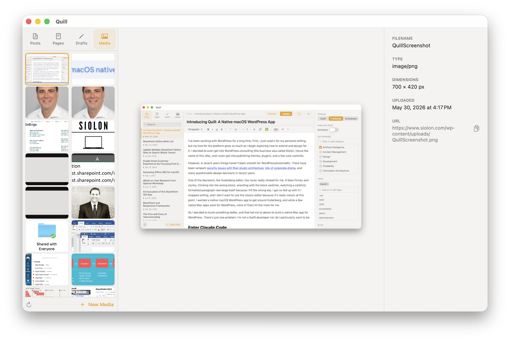
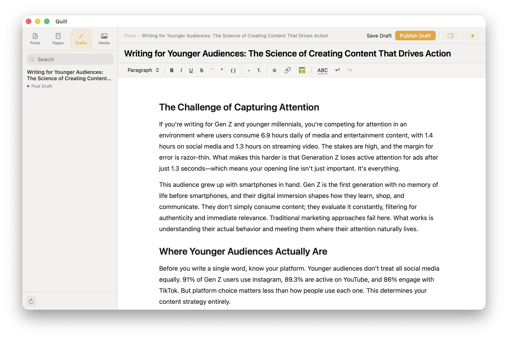
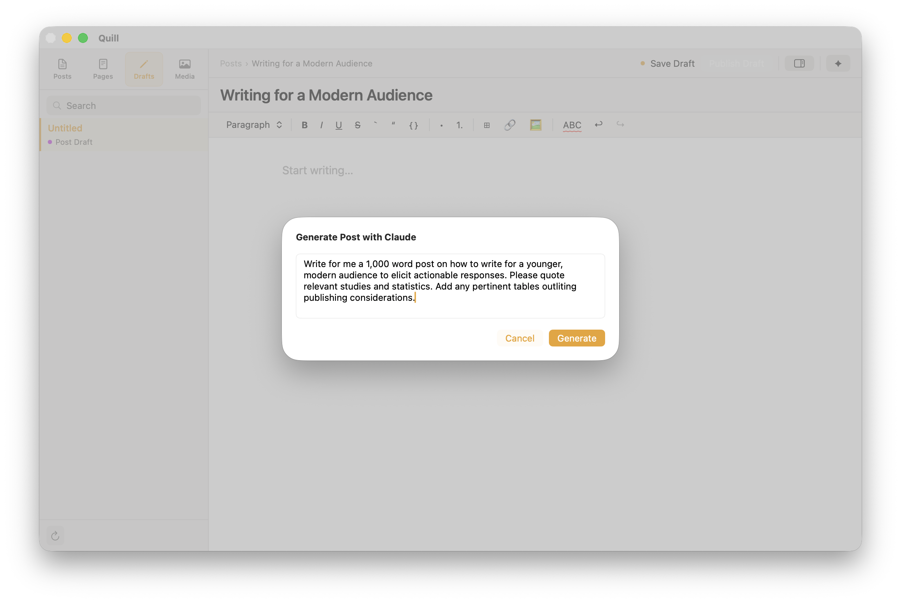

Native macOS · Free
Write, edit, and publish from a native app built for macOS — not a tab in your browser. Connects directly to your self-hosted WordPress site via the REST API. No plugins, no third-party services, no subscription.
Editor
Write with the full formatting toolkit — headings, tables, code blocks, links, and lists. Drag images from Finder directly into the document and Quill uploads them to your media library in one step.
Media Library
Browse your full WordPress media library without opening the admin. A thumbnail grid with a metadata panel — copy URLs, open in browser, or delete files without ever leaving Quill.

Offline Writing
Local drafts live entirely on your Mac in a SQLite database. Write without a connection, autosave every 30 seconds, and publish whenever you're ready. Quill detects server-side changes before you overwrite anything.

AI Writing Assistant
An optional writing assistant powered by the Claude API. Select text, choose an operation, and review the result before it sticks. Provide writing samples and Quill generates a style guide — so the output sounds like you wrote it.

macOS 13 Ventura or later
Self-hosted WordPress 5.6+
Application Passwords were introduced in WordPress 5.6
HTTPS on your WordPress site
Required for Application Passwords to work
WordPress.com is not supported
Quill uses the self-hosted REST API; WordPress.com uses a different authentication model